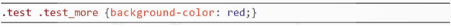

Câu hỏi
Hãy giải thích ý nghĩa định dạng sau:
Câu trả lời
- test.test_more: Đây là một bộ chọn đồng thời (class selector) áp dụng cho các phần tử có cả hai lớp tên là "test" và "test_more". Điều này có nghĩa là chỉ các phần tử có cả hai lớp tên này sẽ được áp dụng định dạng.
- background-color: red;: Đây là thuộc tính CSS được sử dụng để đặt màu nền (background-color) của các phần tử được chọn. Trong trường hợp này, màu nền của các phần tử có lớp tên "test" và "test_more" sẽ được đặt là đỏ (red).